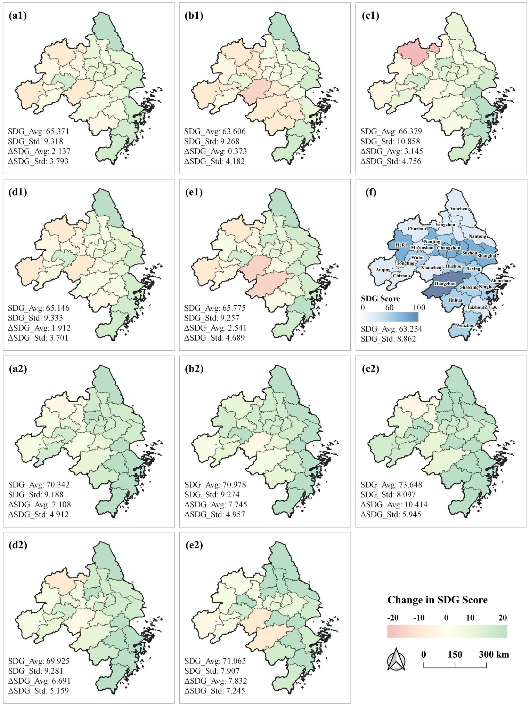

03 · Case Study
Baseline · 2020
A central high, north–south low distribution across the delta.
2030
SSP2 / SSP4 improve least; SSP3 shows the greatest imbalance.
2050
Underdeveloped areas improve most; SSP3 gains the most, SSP4 stays the most unequal.
Separates overall performance from intra-regional inequality.
